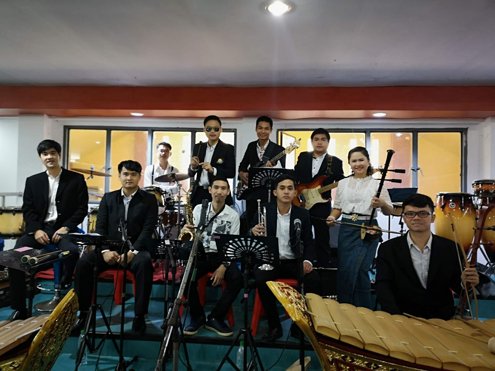
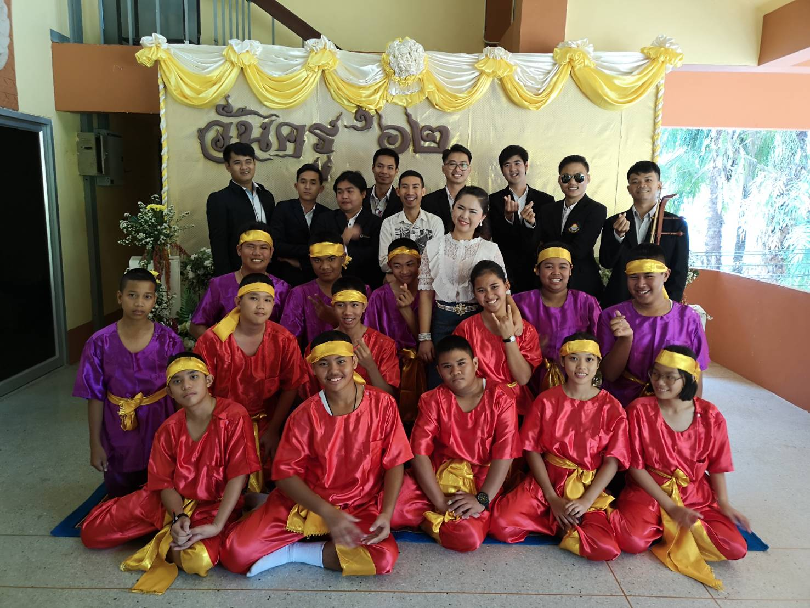
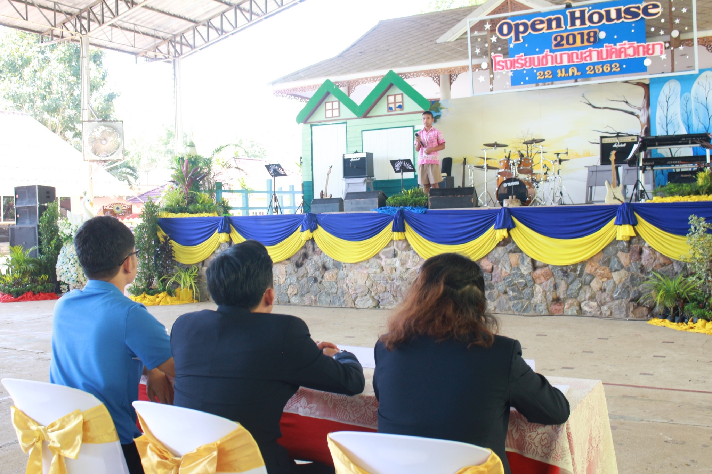
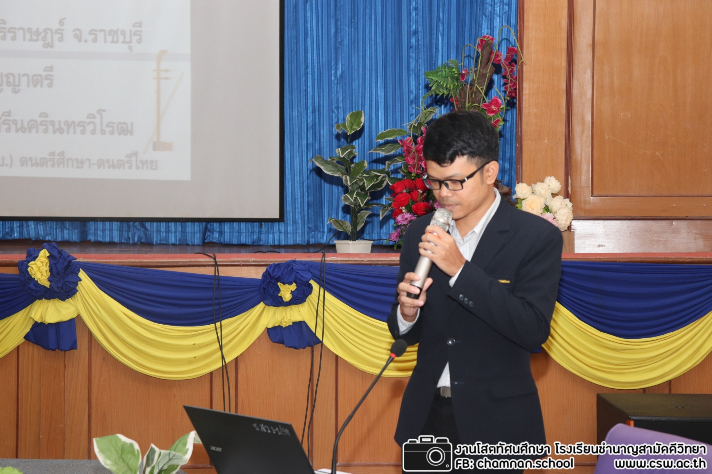
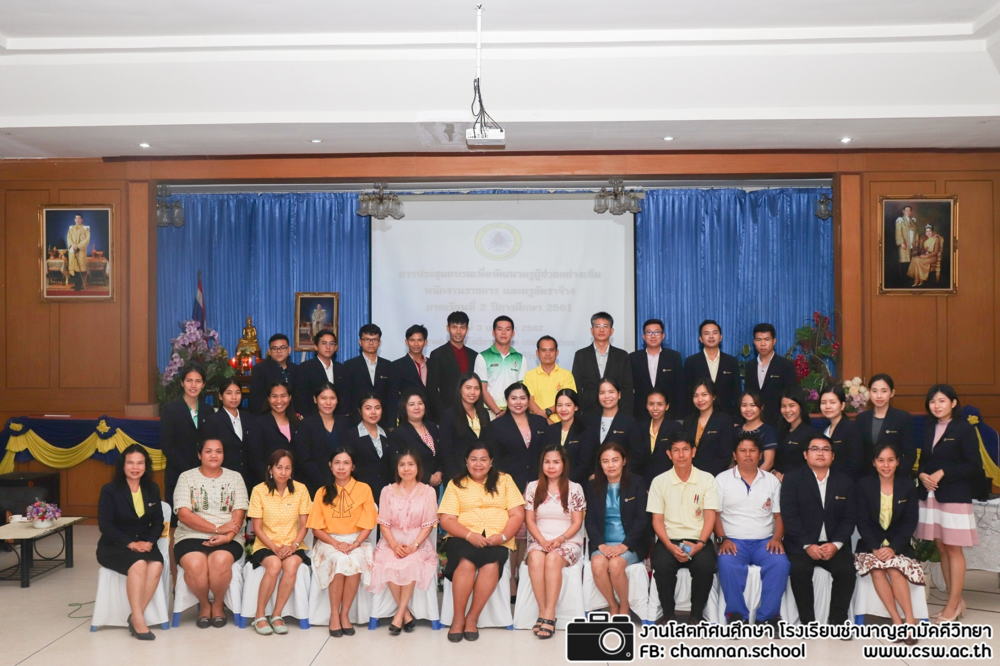

ภาพกิจกรรม
ภาคเรียนที่ 2/2561
กิจกรรมปีใหม่หมวดศิลปะและต้อนรับครูใหม่
29 ธันวาคม 2561
ครูใหม่แนะนำตัวหน้าเสาธง
8 มกราคม 2561

ร่วมซ้อมวงดนตรีผสมสำหรับงานวันครู ณ โรงเรียนแกลง "วิทยสถาวร"
14 มกราคม 2562


แสดงดนตรีวงดนตรีผสมงานวันครู ณ โรงเรียนมกุฎเมืองราชวิทยาลัย
16 มกราคม 2562

เป็นกรรมการตัดสินประกวดการร้องเพลง ในกิจกรรมวันเปิดบ้าน โรงเรียนชำนาญ
22 มกราคม 2562
ตีตะโพนเพลงฉ่อย กิจกรรมงานเปิดบ้านโรงเรียนชำนาญ กลุ่มสาระภาษาไทย
22 มกราคม 2562
ปฏิบัติหน้าที่อยู่ค่ายพักแรม ลูกเสือ – เนตรนํารีสํามัญรุ่นใหญ่ ชั้นมัธยมศึกษาปีที่ 2ประจำปีการศึกษา 2561
5-7 มีนาคม 2562
กลุ่มนันทนาการ ขณะอยู่ค่ายลูกเสือ
6 มีนาคม 2562
ร่วมเป่าแตรงานบวชครูบอม
23 มีนาคม 2562
ปฏิบัติหน้าที่กรรมการคุมสอบนักเรียนเข้าศึกษาต่อชั้น ม.4
31 มีนาคม 2562


เข้ารับการประชุมอบรมพัฒนาครูผู้ช่วยอย่างเข้ม พนักงานราชการ และครูอัตรจ้าง ภาคเรียนที่ 2 ปีการศึกษา 2561
3 เมษายน 2562
ประชุมผู้ปกครองนักเรียน ชั้น ม.1, ม.4
7 เมษายน 2562
ศึกษาดูงาน จ.อุบลราชธาณี และลาวใต้
7-10 เมษายน 2562
ภาคเรียนที่ 1/2562
นันทนาการกิจกรรมปฐมนิเทศนักเรียน ม.1, ม.4
13-14 พฤษภาคม 2562
บรรลงดนตรีไทยงานศพ นายเหลี่ยง แสงงาม วัดตะเคียนงาม ต.ปากน้ำประแส
15, 17, 19 พฤษภาคม 2562

บรรลงดนตรีไทยงานศพ แม่กิมลี้ รอบรู้ วัดตะเคียนงาม ต.ปากน้ำประแส
26, 29, 30 พฤษภาคม 2652
กิจกรรมวันเฉลิมพระชนมพรรษา สมเด็จพระนางเจ้าสุทิดา พัชรสุธาพิมลลักษณ พระบรมราชินี ประจำปี 2562 ณ โรงเรียนชำนาญสามัคคีวิทยา
31 พฤษภาคม 2562
กิจกรรมวันงดสูบบหรี่โลก ประจำปี 2562 ณ ที่ว่าการอำเภอเกลง
31 พฤษภาคม 2562
กิจกรรมลงนามถวายพระพรวันเฉลิมพระชนมพรรษา สมเด็จพระนางเจ้าสุทิดา พัชรสุธาพิมลลักษณ พระบรมราชินี ประจำปี 2562 ณ ที่ว่าการอำเภอแกลง
3 มิถุนายน 2562
ปฎิบัติหน้าที่ในกิจกรรมการประชุมผู้ปกครองนักเรียน ภาคเรียนที่ 1/2562
9 มิถุนายน 2562
กิจกรรมวันไหว้ครู ประจำปีการศึกษา 2562
13 มิถุนายน 2562
บรรลงดนตรีไทยงานศพ คุณแม่ประคอง แตรประสิทธิ์ ณ วัดราชบัลลังก์ประดิษฐาราม
22, 24, 26, 27 มิถุนายน 2562
บรรเลงดนตรีไทย ในงานวันสุนทรภู่ ณ อนุสาวรีย์สุนทรภู่ อ.แกลง
28 มิถุนายน 2562
นำนักเรียนเข้าร่วมและบรรเลงดนตรีถวายมือในพิธีไหว้ครูดนตรี นาฏศิลป์ ณ โรงเรียนระยองวิทยาคม
4 กรกฎาคม 2562
กิจกรรมเดินสวนสนาม ประจำปีการศึกษา 2562
10 กรกฎาคม 2562
ร่วมขบวนกลองยาว ในกิจกรรมแห่เทียนจำนำพรรษา ประจำปี 2562
12 กรกฎาคม 2562

กิจกรรมวันเฉลิมพระชนมพรรษาพระบาทสมเด็จพระปรเมนทรรามาธิบดีศรีสินทรมหาวชิราลงกรณ พระวชิรเกล้าเจ้าอยู่หัว ประจำปี 2562 / และกิจกรรมจิตอาสา
26 กรกฎาคม 2562
เข้าร่วมโครงการพัฒนาศักยภาพครูผู้ช่วยสู่การเป็นครูมืออาชีพ ประจำปี 2562 ณ โรงแรมสีดารีสอร์ท อำเภอเมือง จังหวัดนครนายก
10-11 สิงหาคม 2562
เข้าร่วมพิธีวันเฉลิมพระชนมพรรษา สมเด็จพระนางเจ้าสิริกิติ์ พระบรมราชีนีนาถ พระบรมราชชนนีพันปีหลวง ประจำปีพุทธศักราช 2562 ณ ศูนย์การเรียนรู้เศรษฐกิจพอเพียง อำเภอแกลง จังหวัดระยอง
12 สิงหาคม 2562
เข้าร่วมกิจกรรมส่งเสริมการมีส่วนร่วมต้านทุจริต ณ โรงเรียนวัดพลช้างเผือก อำเภอแกลง จังหวัดระยอง
20 กันยายน 2562